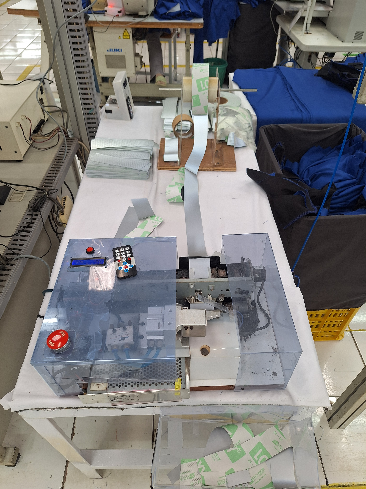

Redesigned the automatic elastic cutting machine by replacing the previous open-loop motion system with a closed-loop PID control algorithm. The new system utilizes encoder feedback to precisely control material feeding, resulting in higher cutting accuracy and improved positioning stability during continuous production.

Closed-Loop Control
Position Feedback
Remote Control
The first-generation version of the elastic cutting machine relied on step calculations to estimate feeding distance. Although it worked for basic automation, mechanical slip, load variation, and accumulated positioning errors reduced accuracy during longer production runs.
This upgraded version replaced the open-loop method with a closed-loop motion control system using encoder feedback and PID control to continuously correct the motor movement before the cutting action is executed.
The project image illustrates the elastic cutting machine in operation, showing the cutting mechanism and the overall machine layout used during production. In this context, the photo represents the real industrial environment where precision motion and stable response are critical, especially when the machine must cut elastics consistently and repeatedly.
Visually, the image helps communicate that the project is not only about control logic but also about applying PID-based motion control in a physical machine that must respond quickly and accurately under real operating conditions.
For reference, this video shows an example of motion response behavior that is relevant to evaluating PID response time in cutting or positioning systems.
You can also open the video directly at https://youtu.be/1axm2ZDe1Jo.
This project represented a significant evolution from the first-generation elastic cutting machine by introducing closed-loop motion control. It strengthened my understanding of PID control, encoder feedback systems, motion control algorithms, and precision machine automation.